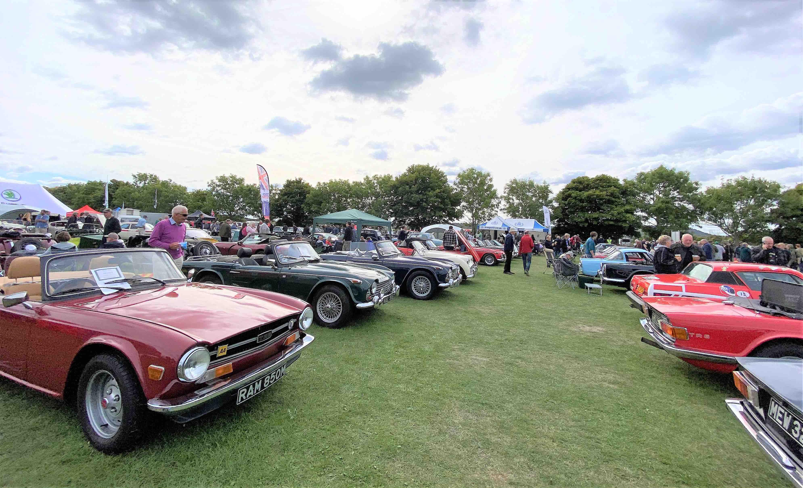

The highlight of this month was the annual Kop Hill Festival. This two-day event attracts cars of every age, size, shape and sound, together with stalls and entertainment of all sorts. The original Kop Hill was a hill climb event from the 1930s up a challenging stretch of road up the Princes Risborough escarpment, and every year this is closed for two days to allow any car to tackle its gradient and curve, though these days you are definitely not meant to treat it as a race. Having said that there was still a lot of rubber left on the tarmac at the start line, and waiting for the flag to drop in front of a grandstand of cheering onlookers, the red mist still came down, even in a 1970s Stag!
Waiting for the flag to drop - Phil D with Joyce as his co-driver, ready to tackle the hill
Even a Stag can dream !
The Chilterns TR Group make this their annual special event, and lay on an all-day food tent, with breakfast, lunch and afternoon tea, plus an impressive display of over 20 Triumphs. Our thanks to them for their organisation and hospitality. Take a look at the KVG Facebook page to get a flavour of the event.
An impressive line-up of Triumphs on the Chilterns Group stand
This beautiful Triumph Italia 2000, only 330 of which were built, using the TR3 chassis and engine, won Best Car of the Show Award
A couple of weeks later it was the October Thatcham Car Show. This has grown from its early days on a patch of grass by the size of the A4, and now takes place on the Memorial Playing Field, giving plenty of room to spread out. Not quite up to Kop Hill, but there was still a good number of cars of all types.
KVG secured a front row position, and we had half a dozen cars, for the last show of the year, right in the middle of our patch. The show has a relaxed view on entry and exit times, so you can come and go as you please, making it ideal for a quick Saturday outing.
KVG cars lock-out the front row at Thatcham, with the help of a couple of Moggies that purred in
It gave Linda & I the opportunity to give an outing to our latest addition, a genuine TR8, with full American export spec, including automatic gearbox, power steering, and early Lucas electronic fuel injection, but one of only a tiny number made with RHD. It even has air-con - appropriate for cars most of who were destined for California, but something Triumph probably did not think at the time would be a necessary extra for the UK! This engine went on to power two generations of Range Rovers and Discovery, but sadly very few Triumphs, as it came at the end of sports car production from Solihull.
Just look where they fixed the air-con compressor !
Phil D brought along his Volvo 850R estate, and if you think that Sweden just produces boring cars, think again. Its turbocharged 5-cylinders produce 250hp and a 0-60 of 6.7s, making this some shopping trolley.
Eight cylinders, five cylinders, or one cylinder. Just how many do you need !
Also on display was a superb 1937 Triumph Dolomite.
A beautiful 1937 Triumph Dolomite saloon
A new event on the last Sunday of the month is the breakfast meet at the Wheelwrights Arms, Woodley.
This is organised by the Barkham & District Classic Car Club, and has been gathering support over recent
months,
with more than 20 cars present, ranging from humble 1960s British saloons, through modern Aston Martins,
up to a fire-breathing US race-spec stock-car. Running on a mixture of Avgas and Tesco Premium,
this lit up the sky and blew out the ear-drums of anyone close by. You can arrive from 9am onwards,
and though the show stops at 12, you can still stay on for one of the pubs' excellent Sunday lunches.
The next meet will be in January.
Bill's well-travelled TR6 makes a welcome appearance at the Wheelwrights Arms
A thing of beauty is a joy to behold. This Jag graced the Wheelwrights car park
How to get enough air into your V8 - take out two of the headlights !
If you haven't put your Triumph to bed, and want to keep the oil circulating, The Cottage Inn, Upper Bucklebury will still be opening its car park through the winter if the weather is fine, on the last Saturday of the month, 12 - 2pm. If the ground is dry enough they open the field behind the pub, but otherwise there is room in the rnormal car park for quite a few cars.